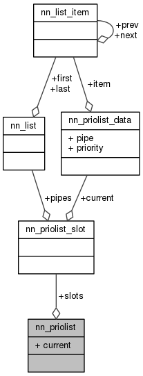

My Project
Main Page
Classes
Files
Class List
Class Index
Class Members
Public Attributes
|
List of all members
nn_priolist Struct Reference
#include <
priolist.h
>
Collaboration diagram for nn_priolist:

Public Attributes
struct
nn_priolist_slot
slots
[
NN_PRIOLIST_SLOTS
]
int
current
Member Data Documentation
int nn_priolist::current
struct
nn_priolist_slot
nn_priolist::slots[
NN_PRIOLIST_SLOTS
]
The documentation for this struct was generated from the following file:
src/protocols/utils/
priolist.h
Generated by
1.8.11
 1.8.11
1.8.11